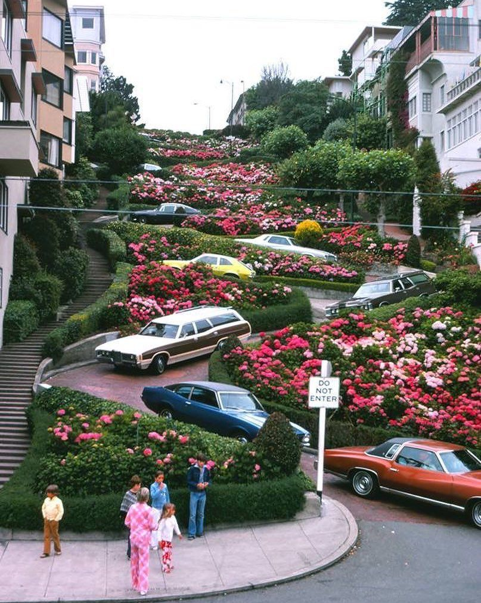

Website Mood
Soft, playful, feminine, and modern.
The creative idea and inspiration behind my final project.
My final website is about flowers connected to San Francisco and California. I wanted the website to feel colorful, modern, floral, and creative.
I used hot pink, light pink, soft pink, and light green because they connect to flowers, spring, gardens, and nature.

Soft, playful, feminine, and modern.
To create a complete colorful website that follows the assignment requirements.
I used Flexbox, hover effects, gradients, and responsive design.